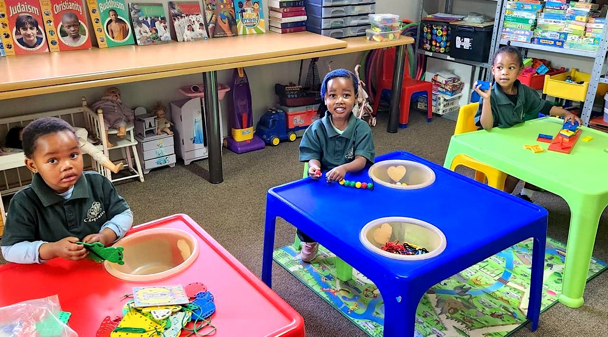
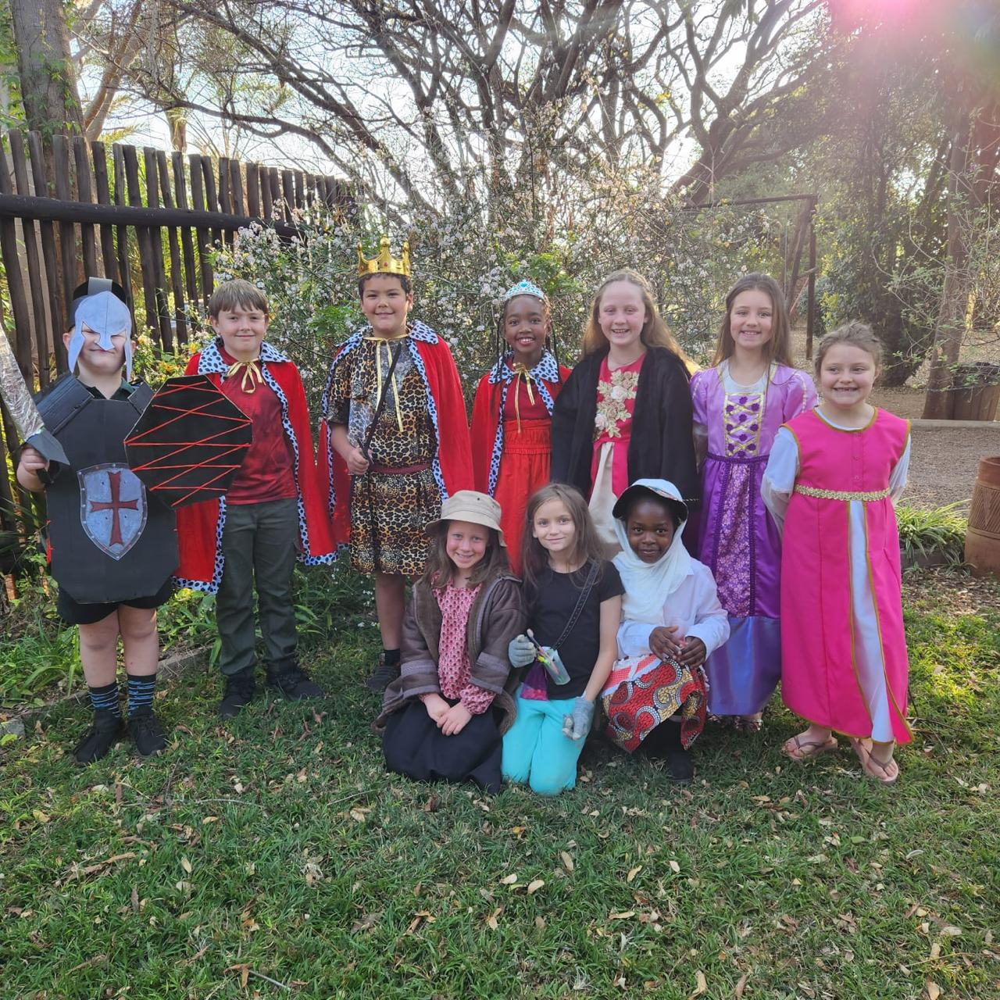

Facilities
Chrysalis is nestled amongst indigenous trees and a succulent nursery on the Percy Fyfe Road just outside Mokopane (formerly Potgietersrus).
Bushveld wildlife browse around a beautiful homestead and organic citrus orchard/vegetable garden.
The playground receives shade from a baobab tree. At least 60 species of birds can be heard or seen by any observant birder. A world-class succulent garden and ponds supply a surplus of biology specimens. The serene surroundings give one the feeling of being in the country while located within 7km of the centre of Mokopane.


